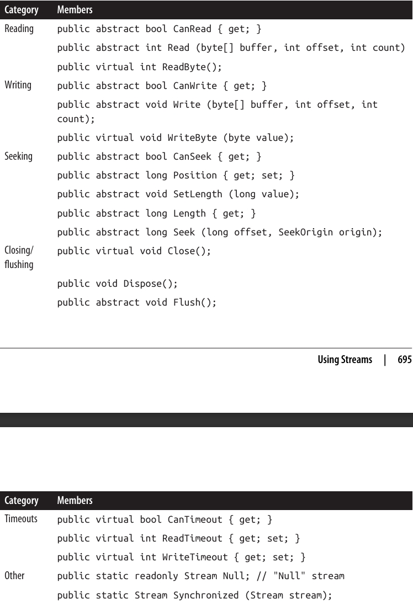
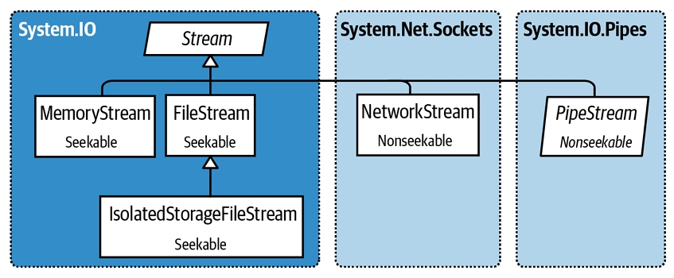
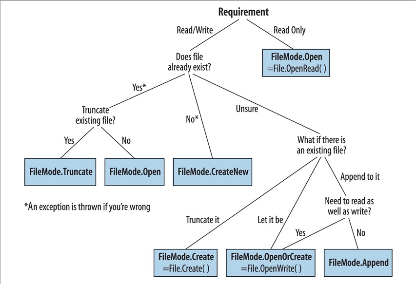

فصل پانزدهم: استریمها و ورودی/خروجی (Streams and I/O)
این فصل، انواع بنیادی برای ورودی (Input) و خروجی (Output) در .NET را توضیح میدهد، با تمرکز ویژه روی موضوعات زیر:
- معماری Stream در .NET و اینکه چطور یک رابط برنامهنویسی (Programming Interface) یکپارچه برای خواندن و نوشتن روی انواع مختلف I/O فراهم میکند.
- کلاسها برای کار با فایلها و دایرکتوریها روی دیسک.
- استریمهای تخصصی برای فشردهسازی (Compression)، Named Pipes، و Memory-Mapped Files.
این فصل بیشتر روی نوعهایی در فضای نام System.IO تمرکز دارد؛ جایی که قابلیتهای سطح پایین I/O قرار گرفتهاند.
🏗️ معماری Stream
معماری Stream در .NET حول سه مفهوم اصلی میچرخد:
- Backing Stores
- Decorators
- Adapters
همانطور که در شکل 15-1 نشان داده شده است.
Backing Store همان نقطه انتهایی است که ورودی و خروجی را کاربردی میکند، مثل یک فایل یا اتصال شبکه. بهطور دقیقتر، Backing Store میتواند یکی یا هر دوی موارد زیر باشد:
- یک منبع (Source) که بایتها میتوانند بهصورت ترتیبی (Sequential) از آن خوانده شوند.
- یک مقصد (Destination) که بایتها میتوانند بهصورت ترتیبی در آن نوشته شوند.

📌 Backing Store
یک Backing Store بهتنهایی هیچ کاربردی برای برنامهنویس ندارد، مگر اینکه در معرض استفاده قرار گیرد. کلاس استاندارد .NET برای این منظور، Stream است. این کلاس مجموعهای استاندارد از متدها را برای خواندن (Reading)، نوشتن (Writing) و مکانیابی (Positioning) در اختیار قرار میدهد.
برخلاف آرایه (Array) که همه دادههای پشتیبان آن بهطور همزمان در حافظه قرار دارند، Stream دادهها را بهصورت سریالی (Serially) مدیریت میکند—یا یک بایت در هر بار، یا در بلوکهایی با اندازه قابل مدیریت. به همین دلیل، یک Stream میتواند بدون توجه به اندازه Backing Store، فقط از مقدار کمی حافظه ثابت استفاده کند.
🗂️ دستهبندی Streamها
استریمها به دو دسته تقسیم میشوند:
-
Backing Store Streams
این استریمها به یک نوع خاص از Backing Store متصل هستند، مثلFileStreamیاNetworkStream. -
Decorator Streams
این استریمها روی یک استریم دیگر سوار میشوند و دادهها را به نوعی تغییر میدهند، مثلDeflateStreamیاCryptoStream.
🌟 مزایای معماری Decorator Streams
- آنها استریمهای Backing Store را از نیاز به پیادهسازی ویژگیهایی مثل فشردهسازی (Compression) و رمزنگاری (Encryption) آزاد میکنند.
- وقتی یک استریم با Decorator پوشانده میشود، رابط (Interface) آن تغییر نمیکند.
- شما میتوانید Decoratorها را در زمان اجرا (Runtime) متصل کنید.
- میتوان چند Decorator را به هم زنجیر کرد (مثلاً یک فشردهساز و سپس یک رمزنگار).
🔗 نقش Adapter
هر دو نوع استریم (Backing Store و Decorator) صرفاً با بایتها کار میکنند. گرچه این رویکرد انعطافپذیر و کارآمد است، ولی بسیاری از برنامهها در سطوح بالاتر کار میکنند—مثل متن (Text) یا XML.
اینجا است که Adapter وارد عمل میشود. Adapter با پوشاندن (Wrapping) یک استریم، متدهایی تخصصی برای یک فرمت خاص ارائه میدهد.
- یک TextReader متدی به نام
ReadLineدارد. - یک XmlWriter متدی به نام
WriteAttributesدارد.
Adapter درست مثل یک Decorator، یک استریم را میپوشاند. اما بر خلاف Decorator، خود یک استریم نیست و معمولاً متدهای بایتمحور را بهطور کامل پنهان میکند.
📝 خلاصه
- Backing Store Streams داده خام را فراهم میکنند.
- Decorator Streams تغییرات باینری شفاف مثل رمزنگاری ارائه میدهند.
- Adapters متدهای سطح بالاتر برای کار با انواعی مثل رشتهها (Strings) و XML فراهم میکنند.
📊 شکل 15-1 ارتباط میان این اجزاء را نشان میدهد. برای ساخت یک زنجیره، کافی است یک شیء را به سازنده (Constructor) شیء دیگر بدهید.
⚙️ استفاده از Streams
کلاس Stream یک کلاس Abstract است که پایهای برای تمام استریمها محسوب میشود. این کلاس متدها و ویژگیهایی برای سه عملیات بنیادی تعریف میکند:
- خواندن (Reading)
- نوشتن (Writing)
- جستجو یا مکانیابی (Seeking)
بهعلاوه، برای کارهای مدیریتی مثل:
- بستن (Closing)
- تخلیه یا Flush کردن
- پیکربندی Timeoutها
نیز متدها و ویژگیهایی در اختیار قرار میدهد (جدول 15-1 را ببینید).

⚡ نسخههای Asynchronous
متدهای Read و Write نسخههای Asynchronous هم دارند که مقدار Task برمیگردانند و بهصورت اختیاری یک CancellationToken میپذیرند. همچنین نسخههای Overload برای کار با نوعهای Span<T> و Memory<T> (که در فصل ۲۳ توضیح داده میشوند) وجود دارد.
📂 نمونه کد: خواندن، نوشتن و Seek در FileStream
using System;
using System.IO;
// ایجاد فایلی به نام test.txt در مسیر جاری:
using (Stream s = new FileStream("test.txt", FileMode.Create))
{
Console.WriteLine(s.CanRead); // True
Console.WriteLine(s.CanWrite); // True
Console.WriteLine(s.CanSeek); // True
s.WriteByte(101);
s.WriteByte(102);
byte[] block = { 1, 2, 3, 4, 5 };
s.Write(block, 0, block.Length); // نوشتن یک بلوک 5 بایتی
Console.WriteLine(s.Length); // 7
Console.WriteLine(s.Position); // 7
s.Position = 0; // بازگشت به ابتدای فایل
Console.WriteLine(s.ReadByte()); // 101
Console.WriteLine(s.ReadByte()); // 102
// خواندن داده از استریم و بازنویسی در آرایه block:
Console.WriteLine(s.Read(block, 0, block.Length)); // 5
// چون در انتهای فایل هستیم، بار بعدی خواندن 0 برمیگرداند:
Console.WriteLine(s.Read(block, 0, block.Length)); // 0
}
🌀 نمونه کد: استفاده از متدهای Async
خواندن یا نوشتن بهصورت Asynchronous فقط به این معنی است که بهجای Read/Write، از ReadAsync/WriteAsync استفاده کنید و نتیجه را await کنید (و همچنین باید متد فراخواننده async تعریف شود، همانطور که در فصل ۱۴ توضیح داده شد).
async static void AsyncDemo()
{
using (Stream s = new FileStream("test.txt", FileMode.Create))
{
byte[] block = { 1, 2, 3, 4, 5 };
await s.WriteAsync(block, 0, block.Length); // نوشتن بهصورت Async
s.Position = 0; // بازگشت به ابتدای فایل
// خواندن دوباره دادهها از استریم به آرایه block:
Console.WriteLine(await s.ReadAsync(block, 0, block.Length)); // 5
}
}
متدهای Asynchronous کمک میکنند برنامههای Responsive و Scalable نوشته شوند که بتوانند با استریمهای بالقوه کند (بهویژه استریمهای شبکهای) کار کنند، بدون اینکه یک Thread بهطور کامل مشغول شود.
برای سادگی، در بیشتر مثالهای این فصل از متدهای Synchronous استفاده میکنیم. با این حال، در بیشتر سناریوهای I/O شبکهای توصیه میشود از متدهای Async استفاده کنید.
✍️ خواندن و نوشتن (Reading and Writing)
یک استریم میتواند از خواندن، نوشتن یا هر دو پشتیبانی کند.
- اگر
CanWriteبرابرfalseباشد، استریم فقط خواندنی است. - اگر
CanReadبرابرfalseباشد، استریم فقط نوشتنی است.
🔹 متد Read یک بلوک داده از استریم میگیرد و آن را درون یک آرایه قرار میدهد. این متد تعداد بایتهای خواندهشده را برمیگرداند که همیشه کمتر یا مساوی با آرگومان count است.
- اگر مقدار کمتر از
countباشد، یعنی یا به انتهای استریم رسیدهایم، یا دادهها در قطعات کوچکتر برگردانده میشوند (مثل حالت معمول در استریمهای شبکهای). - در این شرایط، بخش باقیمانده از آرایه بدون تغییر باقی میماند.
رسیدن به انتهای استریم فقط زمانی قطعی است که
Readمقدار0برگرداند.
❌ مثال اشتباه
فرض کنید یک استریم ۱۰۰۰ بایتی داریم:
// فرض کنید s یک استریم است:
byte[] data = new byte[1000];
s.Read(data, 0, data.Length);
در این حالت، Read ممکن است هر مقداری بین ۱ تا ۱۰۰۰ برگرداند و بخش باقیمانده خوانده نشود.
✅ مثال درست
byte[] data = new byte[1000];
// bytesRead در نهایت همیشه 1000 خواهد بود، مگر اینکه طول استریم کمتر باشد:
int bytesRead = 0;
int chunkSize = 1;
while (bytesRead < data.Length && chunkSize > 0)
bytesRead += chunkSize = s.Read(data, bytesRead, data.Length - bytesRead);
🆕 متدهای جدید در .NET 7
از نسخه .NET 7، کلاس Stream متدهای کمکی زیر را دارد:
ReadExactlyReadAtLeast
(به همراه نسخههای Async آنها).
byte[] data = new byte[1000];
s.ReadExactly(data); // دقیقاً 1000 بایت میخواند
معادل:
s.ReadExactly(data, offset: 0, count: 1000);
📦 BinaryReader
نوع BinaryReader راهحل دیگری برای این کار است:
byte[] data = new BinaryReader(s).ReadBytes(1000);
- اگر طول استریم کمتر از ۱۰۰۰ بایت باشد، اندازه آرایه متناسب با طول واقعی استریم خواهد بود.
- اگر استریم قابلیت
Seekداشته باشد، میتوان با جایگزین کردن ۱۰۰۰ با(int)s.Lengthکل محتوای آن را خواند.
جزئیات بیشتر درباره BinaryReader در بخش “Stream Adapters” (صفحه 709) آمده است.
🔹 ReadByte و WriteByte
-
متد
ReadByteیک بایت میخواند و در صورت رسیدن به انتهای استریم،-1برمیگرداند.
(به همین دلیل مقدار بازگشتی آنintاست، چون نوعbyteنمیتواند-1برگرداند). -
متدهای
WriteوWriteByteداده را به استریم میفرستند. اگر ارسال کامل بایتها ممکن نباشد، یک Exception پرتاب میشود.
🎯 جستجو در استریم (Seeking)
- آرگومان
offsetدر متدهای Read/Write به اندیس شروع در آرایه Buffer اشاره دارد، نه به موقعیت در خود استریم. - یک استریم Seekable است اگر ویژگی
CanSeekآنtrueباشد (مثل FileStream).
با یک استریم Seekable میتوان:
- مقدار
Lengthرا پرسید یا باSetLengthتغییر داد. - در هر لحظه
Positionرا تغییر داد و مشخص کرد از کجا بخواند یا بنویسد.
🔹 ویژگی Position نسبت به ابتدای استریم است، اما متد Seek اجازه میدهد نسبت به موقعیت فعلی یا انتهای استریم حرکت کنید.
- تغییر
Positionدر FileStream معمولاً فقط چند میکروثانیه طول میکشد. اگر قرار است این کار را میلیونها بار در یک حلقه انجام دهید، استفاده ازMemoryMappedFileانتخاب بهتری نسبت به FileStream خواهد بود (صفحه 736 را ببینید). - در استریمهای غیرقابل Seek (مثل استریم رمزنگاری)، تنها راه دانستن طول، خواندن کل آن است. همچنین برای خواندن دوباره یک بخش قبلی، باید استریم را ببندید و یک استریم جدید باز کنید.
🔒 بستن و Flush کردن استریمها
استریمها پس از استفاده باید Dispose شوند تا منابع زیربنایی مثل File Handle و Socket Handle آزاد شوند.
🔹 سادهترین راه تضمین این موضوع، قرار دادن استریم درون یک بلوک using است.
قوانین کلی مدیریت استریمها:
- متدهای Dispose و Close عملکرد یکسانی دارند.
- بستن یا Dispose کردن چندباره یک استریم مشکلی ایجاد نمیکند.
- بستن یک استریم Decorator باعث بسته شدن خودش و Backing Store آن میشود.
- در یک زنجیره از Decoratorها، بستن Decorator بیرونی کل زنجیره را میبندد.
برخی استریمها دادهها را برای بهبود کارایی در حافظه Buffer میکنند (مثل FileStream). این باعث میشود دادهای که به استریم مینویسید، بلافاصله وارد Backing Store نشود.
- متد Flush باعث میشود دادههای بافر شده فوراً نوشته شوند.
Flushبهصورت خودکار هنگام بسته شدن استریم صدا زده میشود، بنابراین هیچوقت نیازی به نوشتن کدی مثل زیر ندارید:
s.Flush();
s.Close();
⏱️ Timeoutها
یک استریم زمانی از Timeout پشتیبانی میکند که ویژگی CanTimeout مقدار true داشته باشد.
- استریمهای شبکهای (Network Streams) از Timeout پشتیبانی میکنند.
- استریمهای فایل (File Streams) و حافظه (Memory Streams) از Timeout پشتیبانی نمیکنند.
برای استریمهایی که Timeout را پشتیبانی میکنند:
- ویژگیهای
ReadTimeoutوWriteTimeoutمدت زمان Timeout را بر حسب میلیثانیه مشخص میکنند. - مقدار
0یعنی بدون Timeout. - اگر Timeout رخ دهد، متدهای
ReadوWriteیک Exception پرتاب میکنند.
⚠️ متدهای Asynchronous (ReadAsync/WriteAsync) از Timeout پشتیبانی نمیکنند. در این حالت، میتوانید یک CancellationToken به این متدها بدهید.
🧵 Thread Safety
بهطور کلی، استریمها Thread-Safe نیستند؛ یعنی دو Thread نمیتوانند بهطور همزمان روی یک استریم بخوانند یا بنویسند، چون احتمال خطا وجود دارد.
کلاس Stream یک راهکار ساده ارائه میدهد: متد استاتیک Synchronized.
- این متد یک استریم از هر نوع را میپذیرد و یک Wrapper ایمن برای Thread برمیگرداند.
- این Wrapper با گرفتن یک قفل انحصاری (Exclusive Lock) در اطراف هر عملیات خواندن، نوشتن یا Seek، تضمین میکند که فقط یک Thread در هر لحظه بتواند عمل مورد نظر را انجام دهد.
🔹 نتیجه عملی این است که چند Thread میتوانند بهطور همزمان دادهها را به یک استریم Append کنند.
اما سایر فعالیتها (مثل خواندن همزمان) نیازمند قفلگذاری اضافی هستند تا مطمئن شوید هر Thread دقیقاً به بخش درستی از استریم دسترسی دارد.
📖 جزئیات کاملتر درباره Thread Safety در فصل ۲۱ توضیح داده میشود.
🚀 ویژگی جدید در .NET 6
از نسخه .NET 6 به بعد، میتوانید برای عملیات File I/O ایمن و کارآمد در برابر Thread از کلاس RandomAccess استفاده کنید.
- این کلاس امکان Thread-Safe File I/O با کارایی بالا را فراهم میکند.
- همچنین اجازه میدهد چندین Buffer را برای بهبود عملکرد بهطور همزمان پاس دهید.
🗄️ Backing Store Streams
📊 شکل 15-2 استریمهای اصلی Backing Store که توسط .NET ارائه میشوند را نشان میدهد.
🔹 علاوه بر این، یک Null Stream هم از طریق فیلد استاتیک Stream.Null در دسترس است.
Null Stream میتواند هنگام نوشتن Unit Testها بسیار مفید باشد.

📂 FileStream
در بخشهای بعدی، به بررسی FileStream و MemoryStream میپردازیم؛ و در بخش پایانی این فصل، IsolatedStorageStream را معرفی میکنیم. در فصل ۱۶ هم به NetworkStream خواهیم پرداخت.
✨ ویژگیهای FileStream
پیشتر استفادهی پایهای از FileStream برای خواندن و نوشتن بایتها را دیدیم. حالا بیایید ویژگیهای خاص این کلاس را دقیقتر بررسی کنیم.
🔹 اگر هنوز از UWP (Universal Windows Platform) استفاده میکنید، میتوانید عملیات فایل را با نوعهای موجود در فضای نام Windows.Storage انجام دهید. توضیحات بیشتر در ضمیمه آنلاین آمده است.
🛠️ ساخت یک FileStream
سادهترین راه برای نمونهسازی FileStream استفاده از متدهای استاتیک کلاس File است:
FileStream fs1 = File.OpenRead("readme.bin"); // فقط خواندن
FileStream fs2 = File.OpenWrite("writeme.tmp"); // فقط نوشتن
FileStream fs3 = File.Create("readwrite.tmp"); // خواندن/نوشتن
⚠️ تفاوت OpenWrite و Create:
Createمحتوای قبلی فایل را کامل پاک میکند (truncate).OpenWriteمحتوای موجود را نگه میدارد و مکان استریم را روی صفر قرار میدهد.
اگر کمتر از اندازهی قبلی داده بنویسید، نتیجه ترکیبی از دادههای قدیمی و جدید خواهد شد.
همچنین میتوانید مستقیم از سازندهی FileStream استفاده کنید. سازندهها امکان کنترل کامل روی:
- نام فایل یا file handle سطح پایین
- حالتهای ساخت و دسترسی به فایل
- گزینههای اشتراکگذاری (sharing)، بافرینگ و امنیت
را فراهم میکنند. برای مثال:
using var fs = new FileStream("readwrite.tmp", FileMode.Open);
(کلیدواژهی using تضمین میکند که استریم پس از خروج از محدوده dispose شود).
🔎 در ادامه به جزئیات FileMode میپردازیم.
⚡ متدهای میانبُر کلاس File
این متدها کل محتوای فایل را در یک مرحله میخوانند:
File.ReadAllText→ بازگرداندن یک stringFile.ReadAllLines→ بازگرداندن یک آرایه از stringFile.ReadAllBytes→ بازگرداندن یک آرایهی بایت
این متدها کل فایل را در یک مرحله مینویسند:
File.WriteAllTextFile.WriteAllLinesFile.WriteAllBytesFile.AppendAllText(مناسب برای اضافهکردن به فایلهای لاگ)
همچنین متدی به نام File.ReadLines وجود دارد که مانند ReadAllLines است، با این تفاوت که یک IEnumerable<string> Lazy بازمیگرداند (بهصورت تدریجی خوانده میشود، نه یکجا). این کارایی بهتری دارد چون کل فایل یکجا در حافظه بارگذاری نمیشود.
مثال با LINQ برای شمردن تعداد خطوطی که طول آنها بیشتر از ۸۰ کاراکتر است:
int longLines = File.ReadLines("filePath")
.Count(l => l.Length > 80);
📁 مشخصکردن نام فایل
نام فایل میتواند:
-
مطلق (Absolute) باشد → مثل:
- ویندوز:
c:\temp\test.txt - یونیکس:
/tmp/test.txt
- ویندوز:
-
نسبی (Relative) به دایرکتوری فعلی → مثل:
test.txttemp\test.txt
🔹 دایرکتوری فعلی برنامه از طریق ویژگی استاتیک:
Environment.CurrentDirectory
قابل دسترسی و تغییر است.
⚠️ اما دایرکتوری فعلی ممکن است با مسیر اجرایی برنامه یکی نباشد. بنابراین هیچوقت برای یافتن فایلهای همراه executable روی آن حساب نکنید.
دایرکتوری پایهی اپلیکیشن از طریق:
AppDomain.CurrentDomain.BaseDirectory
دریافت میشود (معمولاً همان پوشهی فایل اجرایی است).
برای مشخص کردن نام فایل بهصورت نسبی نسبت به این دایرکتوری:
string baseFolder = AppDomain.CurrentDomain.BaseDirectory;
string logoPath = Path.Combine(baseFolder, "logo.jpg");
Console.WriteLine(File.Exists(logoPath));
🌐 مسیرهای شبکهای (UNC Path)
در ویندوز میتوانید فایلها را از طریق مسیر UNC بخوانید/بنویسید:
\\JoesPC\PicShare\pic.jpg\\10.1.1.2\PicShare\pic.jpg
🔹 در macOS یا Unix برای دسترسی به یک Windows File Share باید ابتدا آن را به filesystem خود mount کنید، سپس مانند مسیر معمولی در C# باز کنید.
⚙️ مشخص کردن FileMode
تمام سازندههای FileStream که یک نام فایل میپذیرند، نیاز به یک آرگومان از نوع FileMode enum دارند.
📊 شکل 15-3 نشان میدهد چگونه باید یک FileMode انتخاب کنید. نتایج مشابه فراخوانی متدهای استاتیک کلاس File خواهد بود.

📂 FileStream
🔹 اگر روی فایلهای Hidden از File.Create یا FileMode.Create استفاده کنید، یک استثنا (Exception) پرتاب میشود. برای بازنویسی یک فایل مخفی، باید ابتدا آن را حذف و سپس دوباره ایجاد کنید:
File.Delete("hidden.txt");
using var file = File.Create("hidden.txt");
📖 FileAccess
اگر فقط نام فایل و یک FileMode را به سازندهی FileStream بدهید، نتیجه (با یک استثنا) یک استریم قابل خواندن/نوشتن خواهد بود.
اما میتوانید با مشخصکردن آرگومان FileAccess دسترسی را محدود کنید:
[Flags]
public enum FileAccess { Read = 1, Write = 2, ReadWrite = 3 }
مثال: ساختن یک استریم فقط-خواندنی (معادل File.OpenRead):
using var fs = new FileStream("x.bin", FileMode.Open, FileAccess.Read);
⚠️ حالت خاص: FileMode.Append → فقط Write-only است.
اگر میخواهید دادهها را اضافه (Append) کنید و همزمان امکان خواندن داشته باشید، باید از FileMode.Open یا FileMode.OpenOrCreate استفاده کنید و سپس مکان استریم را به انتهای فایل ببرید:
using var fs = new FileStream("myFile.bin", FileMode.Open);
fs.Seek(0, SeekOrigin.End);
⚙️ ویژگیهای پیشرفتهی FileStream
میتوانید هنگام ساخت یک FileStream آرگومانهای اضافی بدهید:
-
FileShare enum → میزان دسترسی سایر پردازشها (None، Read، ReadWrite، Write).
-
Buffer size → اندازه بافر داخلی (بهصورت پیشفرض ۴KB).
-
Async flag → واگذاری عملیات ناهمگام به سیستمعامل.
-
FileOptions flags → شامل:
Encrypted→ رمزنگاری توسط سیستمعاملDeleteOnClose→ حذف خودکار فایل هنگام بستهشدنRandomAccess→ بهینهسازی برای دسترسی تصادفیSequentialScan→ بهینهسازی برای اسکن ترتیبیWriteThrough→ غیرفعال کردن کش سیستمعامل (برای فایلهای تراکنشی یا لاگها)
⚠️ فلگهایی که سیستمعامل پشتیبانی نکند، بیصدا (silently) نادیده گرفته میشوند.
اگر با FileShare.ReadWrite فایل را باز کنید، چند پردازش یا کاربر میتوانند همزمان بخوانند/بنویسند. برای جلوگیری از تداخل، میتوان بخشهایی از فایل را قفل کرد:
public virtual void Lock(long position, long length);
public virtual void Unlock(long position, long length);
متد Lock اگر ناحیهای از فایل قبلاً قفل باشد، استثنا پرتاب میکند.
🧠 MemoryStream
MemoryStream از یک آرایه در حافظه بهعنوان backing store استفاده میکند.
این یعنی تمام دادهها باید یکجا در حافظه باشند (برخلاف مزیت اصلی Stream).
اما همچنان مفید است، بهخصوص وقتی:
- نیاز به دسترسی تصادفی (Random Access) به یک استریم غیرقابل Seek دارید.
- دادهی اصلی کوچک و قابل مدیریت است.
📌 مثال: کپی کردن دادهی یک استریم درون MemoryStream:
var ms = new MemoryStream();
sourceStream.CopyTo(ms);
-
برای گرفتن دادهها:
ToArray()→ یک کپی از دادهها بازمیگرداند.GetBuffer()→ مرجع مستقیم به آرایهی ذخیرهسازی میدهد (کارآمدتر است، اما طول آن معمولاً از دادهی واقعی بیشتر است).
📍 بستن یا Flush کردن MemoryStream اختیاری است:
- بعد از
Closeدیگر نمیتوانید بخوانید/بنویسید، ولی همچنانToArray()کار میکند. Flushهیچ تأثیری ندارد.
🔗 PipeStream
PipeStream راهی ساده برای ارتباط بین پردازشها (IPC) از طریق پروتکل Pipe سیستمعامل است.
انواع Pipe
- Anonymous Pipe (سریعتر) → ارتباط یکطرفه بین یک پردازش والد و فرزند (روی همان سیستم).
- Named Pipe (انعطافپذیرتر) → ارتباط دوطرفه بین پردازشهای مختلف (روی یک سیستم یا بین سیستمها در شبکه).
📌 Pipes برای IPC روی یک کامپیوتر عالی هستند:
- نیازی به پروتکل شبکه ندارند (بدون سربار شبکه).
- مشکلی با فایروالها ندارند.
کلاسها
PipeStream یک کلاس انتزاعی است. چهار زیرکلاس اصلی دارد:
- AnonymousPipeServerStream
- AnonymousPipeClientStream
- NamedPipeServerStream
- NamedPipeClientStream
🔹 Named Pipes سادهترند، پس اول آنها را بررسی میکنیم.
📡 Named Pipes
ارتباط از طریق یک نام مشترک برقرار میشود. دو نقش اصلی وجود دارد:
- Server → نمونهای از
NamedPipeServerStreamساخته وWaitForConnection()را صدا میزند. - Client → نمونهای از
NamedPipeClientStreamساخته وConnect()را صدا میزند.
سپس دو طرف از استریم برای خواندن/نوشتن استفاده میکنند.
📍 مثال ساده:
Server → ارسال یک بایت (۱۰۰) و دریافت یک بایت:
using var s = new NamedPipeServerStream("pipedream");
s.WaitForConnection();
s.WriteByte(100);
Console.WriteLine(s.ReadByte());
Client → دریافت بایت و ارسال یک بایت (۲۰۰):
using var s = new NamedPipeClientStream("pipedream");
s.Connect();
Console.WriteLine(s.ReadByte());
s.WriteByte(200);
🔹 Pipeها بهطور پیشفرض دوطرفه هستند. پس باید یک پروتکل توافقی بین Client و Server وجود داشته باشد تا هر دو همزمان ننویسند یا نخوانند.
📑 Message Transmission Mode (فقط ویندوز)
برای پیامهای طولانیتر، Pipeها یک حالت خاص به نام Message Mode دارند.
در این حالت میتوان با ویژگی IsMessageComplete فهمید یک پیام کامل دریافت شده است.
📌 مثال: خواندن کل پیام:
static byte[] ReadMessage(PipeStream s)
{
MemoryStream ms = new MemoryStream();
byte[] buffer = new byte[0x1000]; // 4KB
do { ms.Write(buffer, 0, s.Read(buffer, 0, buffer.Length)); }
while (!s.IsMessageComplete);
return ms.ToArray();
}
✨ فعالسازی Message Mode
Server:
using var s = new NamedPipeServerStream(
"pipedream", PipeDirection.InOut, 1, PipeTransmissionMode.Message);
s.WaitForConnection();
byte[] msg = Encoding.UTF8.GetBytes("Hello");
s.Write(msg, 0, msg.Length);
Console.WriteLine(Encoding.UTF8.GetString(ReadMessage(s)));
Client:
using var s = new NamedPipeClientStream("pipedream");
s.Connect();
s.ReadMode = PipeTransmissionMode.Message;
Console.WriteLine(Encoding.UTF8.GetString(ReadMessage(s)));
byte[] msg = Encoding.UTF8.GetBytes("Hello right back!");
s.Write(msg, 0, msg.Length);
⚠️ Message Mode فقط روی ویندوز پشتیبانی میشود.
در سایر سیستمعاملها → PlatformNotSupportedException پرتاب میشود.
پایپهای ناشناس (Anonymous pipes)
یک پایپ ناشناس یک جریان ارتباطی یکطرفه بین یک پردازش والد (parent process) و یک پردازش فرزند (child process) فراهم میکند. بهجای استفاده از یک نام سراسری در سیستم، پایپهای ناشناس از طریق یک هندل خصوصی (private handle) با هم ارتباط برقرار میکنند.
همانند پایپهای نامدار، در اینجا هم نقشهای مشخصی برای کلاینت و سرور وجود دارد. با این حال، شیوهی ارتباط کمی متفاوت است و بهصورت زیر انجام میشود:
- سرور یک AnonymousPipeServerStream میسازد و به یک PipeDirection (جهت In یا Out) متعهد میشود.
- سرور متد GetClientHandleAsString را صدا میزند تا یک شناسه برای پایپ بگیرد، سپس آن را به کلاینت میفرستد (معمولاً بهعنوان آرگومان هنگام راهاندازی پردازش فرزند).
- پردازش فرزند یک AnonymousPipeClientStream میسازد و جهت مخالف را مشخص میکند.
- سرور هندل محلیای که در مرحلهی ۲ ساخته شده بود را با متد DisposeLocalCopyOfClientHandle آزاد میکند.
- حالا پردازش والد و فرزند میتوانند از طریق خواندن/نوشتن استریم با هم ارتباط برقرار کنند.
از آنجا که پایپهای ناشناس یکطرفه هستند، یک سرور برای ارتباط دوطرفه باید دو پایپ بسازد.
کد زیر نشان میدهد که چطور دو پایپ (ورودی و خروجی) ساخته میشوند و سپس یک پردازش فرزند راهاندازی میشود. در ادامه، یک بایت از سرور به فرزند ارسال شده و یک بایت در پاسخ دریافت میشود:
class Program
{
static void Main (string[] args)
{
if (args.Length == 0)
// بدون آرگومان = حالت سرور
AnonymousPipeServer();
else
// آرگومانها = شناسههای پایپ برای حالت کلاینت
AnonymousPipeClient (args [0], args [1]);
}
static void AnonymousPipeClient (string rxID, string txID)
{
using var rx = new AnonymousPipeClientStream (PipeDirection.In, rxID);
using var tx = new AnonymousPipeClientStream (PipeDirection.Out, txID);
Console.WriteLine ("Client received: " + rx.ReadByte ());
tx.WriteByte (200);
}
static void AnonymousPipeServer ()
{
using var tx = new AnonymousPipeServerStream (
PipeDirection.Out, HandleInheritability.Inheritable);
using var rx = new AnonymousPipeServerStream (
PipeDirection.In, HandleInheritability.Inheritable);
string txID = tx.GetClientHandleAsString ();
string rxID = rx.GetClientHandleAsString ();
// ایجاد و راهاندازی پردازش فرزند
string thisAssembly = Assembly.GetEntryAssembly().Location;
string thisExe = Path.ChangeExtension (thisAssembly, ".exe");
var args = $"{txID} {rxID}";
var startInfo = new ProcessStartInfo (thisExe, args);
startInfo.UseShellExecute = false; // الزامی برای پردازش فرزند
Process p = Process.Start (startInfo);
tx.DisposeLocalCopyOfClientHandle (); // آزادسازی منابع
rx.DisposeLocalCopyOfClientHandle ();
tx.WriteByte (100); // ارسال یک بایت به پردازش فرزند
Console.WriteLine ("Server received: " + rx.ReadByte ());
p.WaitForExit ();
}
}
📌 همانند پایپهای نامدار، کلاینت و سرور باید ارسال و دریافت خود را هماهنگ کنند و روی طول هر انتقال توافق داشته باشند. متأسفانه پایپهای ناشناس از حالت پیام (message mode) پشتیبانی نمیکنند، بنابراین باید خودتان پروتکل مدیریت طول پیام را پیادهسازی کنید.
یکی از راهحلها این است که در چهار بایت اول هر انتقال، یک عدد صحیح (integer) ارسال شود که طول پیام بعدی را مشخص کند. کلاس BitConverter متدهایی برای تبدیل بین یک عدد صحیح و یک آرایهی ۴ بایتی فراهم میکند.

BufferedStream (استریم بافر شده)
بافرینگ باعث بهبود کارایی میشود چون تعداد دفعات رفتوبرگشت به backing store (مثل فایل یا شبکه) را کاهش میدهد.
در مثال زیر ما یک FileStream را داخل یک BufferedStream با اندازهی بافر ۲۰ کیلوبایت میپیچیم:
// نوشتن 100K در یک فایل:
File.WriteAllBytes ("myFile.bin", new byte [100000]);
using FileStream fs = File.OpenRead ("myFile.bin");
using BufferedStream bs = new BufferedStream (fs, 20000); // بافر 20K
bs.ReadByte();
Console.WriteLine (fs.Position); // 20000
🔍 در این مثال، استریم زیرین (FileStream) بعد از خواندن فقط یک بایت، به اندازهی ۲۰,۰۰۰ بایت جلو میرود؛ این به خاطر read-ahead buffering است. ما میتوانیم متد ReadByte را ۱۹,۹۹۹ بار دیگر صدا بزنیم، بدون اینکه دوباره FileStream درگیر شود.
✅ در عمل، بستن یک BufferedStream به طور خودکار استریم backing store زیرین را هم میبندد.
⚠️ ترکیب BufferedStream با FileStream (مثل این مثال) ارزش محدودی دارد، چون FileStream خودش بافر داخلی دارد. تنها کاربرد آن میتواند زمانی باشد که بخواهیم بافر یک FileStream ساختهشده را بزرگتر کنیم.
Stream Adapters (آداپتورهای استریم)
از آنجا که Stream فقط با بایتها سروکار دارد، برای خواندن یا نوشتن دادههایی مثل رشتهها (string)، اعداد صحیح (int) یا عناصر XML باید از adapter استفاده کنید.
📌 .NET آداپتورهای زیر را فراهم کرده است:
-
آداپتورهای متنی (برای دادههای رشته و کاراکتر):
TextReader,TextWriterStreamReader,StreamWriterStringReader,StringWriter
-
آداپتورهای باینری (برای انواع دادههای اولیه مثل int, bool, string, float):
BinaryReader,BinaryWriter
-
آداپتورهای XML (پوشش دادهشده در فصل 11):
XmlReader,XmlWriter
📖 شکل 15-5 روابط بین این نوعها را نشان میدهد.

آداپتورهای متنی (Text Adapters)
TextReader و TextWriter کلاسهای پایهی انتزاعی هستند که مخصوص کار با کاراکترها و رشتهها طراحی شدهاند. هر کدام در .NET دو پیادهسازی عمومی دارند:
-
StreamReader/StreamWriter
از یک Stream بهعنوان منبع دادهی خام استفاده میکنند و بایتهای استریم را به کاراکترها یا رشتهها تبدیل میکنند. -
StringReader/StringWriter
TextReader/TextWriterرا با استفاده از رشتههای درون حافظه پیادهسازی میکنند.
📌 جدول 15-2 اعضای TextReader را بر اساس دستهبندی نشان میدهد.
-
متد
Peekکاراکتر بعدی در استریم را برمیگرداند بدون اینکه موقعیت را جلو ببرد. -
هم
Peekو هم نسخهی بدون پارامترReadمقدار -1 را برمیگردانند اگر به انتهای استریم رسیده باشند؛ در غیر این صورت یک عدد صحیح (int) برمیگردانند که میتوان آن را مستقیم بهcharتبدیل کرد. -
نسخهی overload شدهی
Readکه یکchar[] bufferمیگیرد، دقیقاً مشابه متدReadBlockعمل میکند. -
متد
ReadLineمیخواند تا زمانی که به یکی از اینها برسد:- CR (کد کاراکتری 13)
- LF (کد کاراکتری 10)
- یا ترکیب CR+LF
سپس یک رشته (string) برمیگرداند و کاراکترهای CR/LF را حذف میکند.

Environment.NewLine دنبالهی new-line مناسب برای سیستمعامل فعلی را برمیگرداند.
- در ویندوز، این مقدار
"\r\n"است (به یاد “ReturN” بیفتید) و به صورت تقریبی شبیه یک ماشین تحریر مکانیکی مدل شده: ابتدا CR (کاراکتر ۱۳) و سپس LF (کاراکتر ۱۰). اگر ترتیب را برعکس کنید، یا دو خط جدید خواهید داشت یا هیچ! - در Unix و macOS، مقدار تنها
"\n"است.
TextWriter متدهای مشابهی برای نوشتن دارد، همانطور که در جدول 15-3 نشان داده شده است. متدهای Write و WriteLine همچنین overload شدهاند تا همهی نوعهای اولیه و نوع object را قبول کنند. این متدها صرفاً متد ToString را روی مقداری که داده شده صدا میزنند (اختیاری از طریق یک IFormatProvider که هنگام صدا زدن متد یا هنگام ساخت TextWriter مشخص شده باشد).

متد WriteLine بهسادگی متن دادهشده را با Environment.NewLine الحاق میکند. میتوانید این رفتار را از طریق خاصیت NewLine تغییر دهید (این میتواند برای تطبیق با فرمتهای فایل Unix مفید باشد).
همانند Stream، کلاسهای TextReader و TextWriter نسخههای آسنکرون مبتنی بر Task از متدهای خواندن و نوشتن خود را ارائه میدهند.
StreamReader و StreamWriter 📄✍️
در مثال زیر، یک StreamWriter دو خط متن را در یک فایل مینویسد و سپس یک StreamReader فایل را دوباره میخواند:
using (FileStream fs = File.Create("test.txt"))
using (TextWriter writer = new StreamWriter(fs))
{
writer.WriteLine("Line1");
writer.WriteLine("Line2");
}
using (FileStream fs = File.OpenRead("test.txt"))
using (TextReader reader = new StreamReader(fs))
{
Console.WriteLine(reader.ReadLine()); // Line1
Console.WriteLine(reader.ReadLine()); // Line2
}
چون Text adapters اغلب همراه با فایلها استفاده میشوند، کلاس File متدهای استاتیک CreateText، AppendText و OpenText را برای کوتاه کردن روند فراهم میکند:
using (TextWriter writer = File.CreateText("test.txt"))
{
writer.WriteLine("Line1");
writer.WriteLine("Line2");
}
using (TextWriter writer = File.AppendText("test.txt"))
writer.WriteLine("Line3");
using (TextReader reader = File.OpenText("test.txt"))
while (reader.Peek() > -1)
Console.WriteLine(reader.ReadLine()); // Line1, Line2, Line3
این مثال همچنین نشان میدهد که چگونه پایان فایل را بررسی کنیم (reader.Peek()). روش دیگر این است که تا وقتی reader.ReadLine مقدار null برگرداند، ادامه دهیم.
میتوانید انواع دیگری مانند اعداد صحیح را نیز بخوانید و بنویسید، اما چون TextWriter متد ToString را روی نوع شما صدا میزند، هنگام خواندن باید رشته را Parse کنید:
using (TextWriter w = File.CreateText("data.txt"))
{
w.WriteLine(123); // مینویسد "123"
w.WriteLine(true); // مینویسد "true"
}
using (TextReader r = File.OpenText("data.txt"))
{
int myInt = int.Parse(r.ReadLine()); // myInt == 123
bool yes = bool.Parse(r.ReadLine()); // yes == true
}
رمزگذاری کاراکترها 🔤
TextReader و TextWriter خودشان تنها کلاسهای abstract هستند و ارتباطی با یک stream یا backing store ندارند. اما StreamReader و StreamWriter به یک stream بایتمحور متصلاند و باید بین کاراکترها و بایتها تبدیل انجام دهند. این کار از طریق کلاس Encoding در System.Text انجام میشود که هنگام ساخت StreamReader یا StreamWriter انتخاب میکنید. اگر چیزی انتخاب نکنید، UTF-8 پیشفرض استفاده میشود.
اگر بهطور صریح یک Encoding مشخص کنید، StreamWriter بهطور پیشفرض یک پیشوند (prefix) برای شناسایی رمزگذاری به ابتدای جریان مینویسد. این معمولاً ناخواسته است و میتوانید با ساخت Encoding به شکل زیر از آن جلوگیری کنید:
var encoding = new UTF8Encoding(
encoderShouldEmitUTF8Identifier: false,
throwOnInvalidBytes: true
);
آرگومان دوم به StreamWriter یا StreamReader میگوید اگر با بایتهایی مواجه شد که ترجمه معتبر به رشته ندارند، Exception پرتاب کند، که با رفتار پیشفرض مطابقت دارد.
مثال رمزگذاری ASCII و UTF-8
رمزگذاری ساده ASCII است، چون هر کاراکتر با یک بایت نمایش داده میشود. کاراکترهای غیرانگلیسی یا نمادهای ویژه قابل نمایش نیستند و به □ تبدیل میشوند.
رمزگذاری پیشفرض UTF-8 میتواند تمام کاراکترهای یونیکد را نمایش دهد. کاراکترهای ASCII (127 کاراکتر اول) با یک بایت کدگذاری میشوند؛ بقیه کاراکترها با تعداد بایت متغیر (معمولاً دو یا سه) کدگذاری میشوند. مثال:
using (TextWriter w = File.CreateText("but.txt")) // استفاده از UTF-8 پیشفرض
w.WriteLine("but-");
using (Stream s = File.OpenRead("but.txt"))
for (int b; (b = s.ReadByte()) > -1;)
Console.WriteLine(b);
برای کاراکتر em dash (—) که خارج از 127 کاراکتر اول یونیکد است، UTF-8 سه بایت استفاده میکند.
UTF-16
UTF-16 از دو یا چهار بایت برای هر کاراکتر استفاده میکند. نوع char در C# فقط 16 بیت است، پس UTF-16 دقیقاً دو بایت برای هر char استفاده میکند. این امکان پرش به ایندکس کاراکتر مشخص در stream را آسان میکند.
UTF-16 از یک پیشوند دو بایتی برای مشخص کردن little-endian یا big-endian استفاده میکند. ترتیب پیشفرض little-endian برای سیستمهای مبتنی بر ویندوز استاندارد است.
StringReader و StringWriter
اینها stream را wrap نمیکنند و از یک string یا StringBuilder بهعنوان منبع داده استفاده میکنند. بنابراین نیاز به ترجمه بایت نیست و کلاسها تنها بر اساس همان رفتار پایه StreamReader/StreamWriter عمل میکنند.
مثال: اگر بخواهید یک رشته حاوی XML را با XmlReader تجزیه کنید:
XmlReader r = XmlReader.Create(new StringReader(myString));
Binary Adapters 💾
BinaryReader و BinaryWriter دادههای native مانند bool، byte، int، double، string و آرایههای نوعهای اولیه را میخوانند و مینویسند.
بر خلاف StreamReader/StreamWriter، binary adapters دادهها را بهصورت موثر در حافظه ذخیره میکنند.
مثال تعریف کلاس ساده و ذخیره/بارگذاری با binary adapters:
public class Person
{
public string Name;
public int Age;
public double Height;
public void SaveData(Stream s)
{
var w = new BinaryWriter(s);
w.Write(Name);
w.Write(Age);
w.Write(Height);
w.Flush(); // اطمینان از خالی شدن بافر
}
public void LoadData(Stream s)
{
var r = new BinaryReader(s);
Name = r.ReadString();
Age = r.ReadInt32();
Height = r.ReadDouble();
}
}
همچنین میتوان با BinaryReader کل محتوای یک stream seekable را به آرایه بایت خواند:
byte[] data = new BinaryReader(s).ReadBytes((int)s.Length);
این روش راحتتر از خواندن مستقیم از stream است، چون نیاز به loop برای اطمینان از خواندن تمام دادهها ندارد.
بستن و آزادسازی Stream Adapters 🔒
برای تخریب (tear down) stream adapters، چهار گزینه دارید:
- فقط adapter را ببندید.
- adapter را ببندید و سپس stream را ببندید.
- (برای writers) adapter را Flush کرده و سپس stream را ببندید.
- (برای readers) فقط stream را ببندید.
در adapters، متدهای Close و Dispose هممعنی هستند، همانند رفتارشان در streams.
گزینههای 1 و 2 از نظر معنایی یکسان هستند، زیرا بستن یک adapter بهطور خودکار stream زیرین را نیز میبندد. هر زمان که از nested using statements استفاده میکنید، عملاً گزینه 2 را انتخاب کردهاید:
using (FileStream fs = File.Create("test.txt"))
using (TextWriter writer = new StreamWriter(fs))
writer.WriteLine("Line");
چون dispose به ترتیب از داخل به بیرون انجام میشود، ابتدا adapter بسته میشود و سپس stream. همچنین اگر در constructor adapter استثنایی رخ دهد، stream همچنان بسته میشود. استفاده از nested using statements تقریباً همیشه ایمن است.
هرگز یک stream را قبل از بستن یا Flush کردن writer آن نبندید — در غیر این صورت دادههای بافر شده در adapter از بین میروند.
گزینههای 3 و 4 کار میکنند چون adapters در دسته objects با disposal اختیاری قرار دارند. یک مثال: ممکن است adapter را تمام کرده باشید ولی بخواهید stream زیرین برای استفادههای بعدی باز بماند:
using (FileStream fs = new FileStream("test.txt", FileMode.Create))
{
StreamWriter writer = new StreamWriter(fs);
writer.WriteLine("Hello");
writer.Flush();
fs.Position = 0;
Console.WriteLine(fs.ReadByte());
}
در اینجا، ابتدا به فایل مینویسیم، موقعیت stream را تغییر میدهیم و سپس اولین بایت را میخوانیم. اگر StreamWriter را dispose میکردیم، FileStream نیز بسته میشد و خواندن بعدی شکست میخورد. شرط این است که Flush را صدا بزنیم تا بافر StreamWriter به stream نوشته شود.
Stream adapters با semantics اختیاری در disposal، الگوی extended disposal که finalizer در آن Dispose را صدا میزند، پیادهسازی نمیکنند. این امکان را میدهد که adapter رهاشده هنگام رسیدن garbage collector به آن، خودکار dispose نشود.
همچنین یک constructor در StreamReader/StreamWriter وجود دارد که دستور میدهد stream بعد از disposal باز بماند. بنابراین میتوان مثال قبل را به شکل زیر بازنویسی کرد:
using (var fs = new FileStream("test.txt", FileMode.Create))
{
using (var writer = new StreamWriter(fs, new UTF8Encoding(false, true), 0x400, true))
writer.WriteLine("Hello");
fs.Position = 0;
Console.WriteLine(fs.ReadByte());
Console.WriteLine(fs.Length);
}
Compression Streams 📦
در فضای نام System.IO.Compression دو compression stream عمومی وجود دارد: DeflateStream و GZipStream. هر دو از الگوریتم فشردهسازی مشابه ZIP استفاده میکنند. تفاوتشان این است که GZipStream یک پروتکل اضافی در ابتدا و انتها مینویسد که شامل CRC برای تشخیص خطا است و با استانداردهای نرمافزاری دیگر سازگار است.
.NET همچنین BrotliStream را ارائه میدهد که الگوریتم Brotli را پیادهسازی میکند. BrotliStream بیش از 10 برابر کندتر از DeflateStream و GZipStream است اما نسبت فشردهسازی بهتری دارد. (این کاهش سرعت فقط برای فشردهسازی است؛ دیکامپرشن بسیار سریع است.)
هر سه stream قابلیت خواندن و نوشتن دارند، با این شرایط:
- هنگام فشردهسازی، همیشه روی stream مینویسید.
- هنگام دیکامپرشن، همیشه از stream میخوانید.
DeflateStream، GZipStream و BrotliStream decorator هستند؛ آنها دادهها را از stream دیگری که هنگام ساخت ارائه میدهید، فشرده یا دیکامپر میکنند.
مثال فشردهسازی و دیکامپرشن یک سری بایت با استفاده از FileStream:
using (Stream s = File.Create("compressed.bin"))
using (Stream ds = new DeflateStream(s, CompressionMode.Compress))
for (byte i = 0; i < 100; i++)
ds.WriteByte(i);
using (Stream s = File.OpenRead("compressed.bin"))
using (Stream ds = new DeflateStream(s, CompressionMode.Decompress))
for (byte i = 0; i < 100; i++)
Console.WriteLine(ds.ReadByte()); // 0 تا 99
با DeflateStream، فایل فشرده 102 بایت است: کمی بزرگتر از اصلی. BrotliStream آن را به 73 بایت فشرده میکند. فشردهسازی با دادههای باینری متراکم و غیرتکراری ضعیف عمل میکند و با دادههای رمزنگاری شده بدتر است. اما برای فایلهای متنی عملکرد خوبی دارد.
مثال بعدی: فشرده و دیکامپرشن یک متن 1000 کلمه با الگوریتم Brotli:
string[] words = "The quick brown fox jumps over the lazy dog".Split();
Random rand = new Random(0); // برای ثبات
using (Stream s = File.Create("compressed.bin"))
using (Stream ds = new BrotliStream(s, CompressionMode.Compress))
using (TextWriter w = new StreamWriter(ds))
for (int i = 0; i < 1000; i++)
await w.WriteAsync(words[rand.Next(words.Length)] + " ");
Console.WriteLine(new FileInfo("compressed.bin").Length); // 808
using (Stream s = File.OpenRead("compressed.bin"))
using (Stream ds = new BrotliStream(s, CompressionMode.Decompress))
using (TextReader r = new StreamReader(ds))
Console.Write(await r.ReadToEndAsync());
در این حالت، BrotliStream به طور مؤثر فایل را به 808 بایت فشرده میکند — کمتر از یک بایت برای هر کلمه. (DeflateStream همان دادهها را به 885 بایت فشرده میکند.)
فشردهسازی در حافظه 🧠💨
گاهی لازم است فشردهسازی کاملاً در حافظه انجام شود. نمونه با MemoryStream:
byte[] data = new byte[1000]; // آرایه خالی برای تست فشردهسازی
var ms = new MemoryStream();
using (Stream ds = new DeflateStream(ms, CompressionMode.Compress))
ds.Write(data, 0, data.Length);
byte[] compressed = ms.ToArray();
Console.WriteLine(compressed.Length); // 11
// دیکامپرشن دوباره به آرایه داده:
ms = new MemoryStream(compressed);
using (Stream ds = new DeflateStream(ms, CompressionMode.Decompress))
for (int i = 0; i < 1000; i += ds.Read(data, i, 1000 - i));
استفاده از using روی DeflateStream آن را بهطور استاندارد میبندد و هر بافر نوشتهنشده را Flush میکند. این همچنین MemoryStream را میبندد، بنابراین برای استخراج دادهها باید ToArray را صدا بزنیم.
نسخه جایگزین که MemoryStream را باز نگه میدارد و از متدهای آسنکرون استفاده میکند:
byte[] data = new byte[1000];
MemoryStream ms = new MemoryStream();
using (Stream ds = new DeflateStream(ms, CompressionMode.Compress, true))
await ds.WriteAsync(data, 0, data.Length);
Console.WriteLine(ms.Length); // 113
ms.Position = 0;
using (Stream ds = new DeflateStream(ms, CompressionMode.Decompress))
for (int i = 0; i < 1000; i += await ds.ReadAsync(data, i, 1000 - i));
فلگ اضافی در constructor به DeflateStream میگوید که stream زیرین را در disposal نبندد. به این ترتیب MemoryStream باز میماند و میتوانیم آن را دوباره از موقعیت صفر بخوانیم.
فشردهسازی فایلها در Unix با GZip 🐧📦
الگوریتم فشردهسازی GZipStream در سیستمهای Unix بهعنوان فرمت فشردهسازی فایل محبوب است. هر فایل منبع در یک فایل هدف جداگانه با پسوند .gz فشرده میشود.
روشهای زیر همان کار gzip و gunzip در خط فرمان Unix را انجام میدهند:
async Task GZip(string sourcefile, bool deleteSource = true)
{
var gzip = $"{sourcefile}.gz";
if (File.Exists(gzip))
throw new Exception("Gzip file already exists");
// فشردهسازی
using (FileStream inStream = File.Open(sourcefile, FileMode.Open))
using (FileStream outStream = new FileStream(gzip, FileMode.CreateNew))
using (GZipStream gzipStream = new GZipStream(outStream, CompressionMode.Compress))
await inStream.CopyToAsync(gzipStream);
if (deleteSource) File.Delete(sourcefile);
}
async Task GUnzip(string gzipfile, bool deleteGzip = true)
{
if (Path.GetExtension(gzipfile) != ".gz")
throw new Exception("Not a gzip file");
var uncompressedFile = gzipfile.Substring(0, gzipfile.Length - 3);
if (File.Exists(uncompressedFile))
throw new Exception("Destination file already exists");
// دیکامپرشن
using (FileStream uncompressToStream = File.Open(uncompressedFile, FileMode.Create))
using (FileStream zipfileStream = File.Open(gzipfile, FileMode.Open))
using (var unzipStream = new GZipStream(zipfileStream, CompressionMode.Decompress))
await unzipStream.CopyToAsync(uncompressToStream);
if (deleteGzip) File.Delete(gzipfile);
}
نمونه استفاده:
await GZip("/tmp/myfile.txt"); // ایجاد /tmp/myfile.txt.gz
await GUnzip("/tmp/myfile.txt.gz"); // بازسازی /tmp/myfile.txt
کار با فایلهای ZIP 🗜️
کلاسهای ZipArchive و ZipFile در System.IO.Compression از فرمت ZIP پشتیبانی میکنند. مزیت ZIP نسبت به DeflateStream و GZipStream این است که:
-
میتواند چندین فایل را در خود جای دهد.
-
با فایلهای ZIP ایجاد شده توسط Windows Explorer سازگار است.
-
ZipArchive با streams کار میکند.
-
ZipFile سناریوی معمول کار با فایلها را پوشش میدهد و کلاس کمکی است برای ZipArchive.
نمونه استفاده از CreateFromDirectory برای افزودن تمام فایلهای یک دایرکتوری به ZIP:
ZipFile.CreateFromDirectory(@"d:\MyFolder", @"d:\archive.zip");
برای استخراج ZIP به دایرکتوری:
ZipFile.ExtractToDirectory(@"d:\archive.zip", @"d:\MyFolder");
از .NET 8 به بعد میتوانید به جای مسیر فایل، یک Stream نیز مشخص کنید.
هنگام فشردهسازی، میتوانید مشخص کنید که بهینهسازی برای حجم فایل یا سرعت انجام شود و آیا نام دایرکتوری منبع در آرشیو لحاظ شود یا نه.
برای دسترسی به ورودیهای منفرد ZIP از Open استفاده میکنیم، که یک ZipArchive برمیگرداند. میتوان فایلها را از طریق Entries شمارش یا با GetEntry بهصورت خاص یافت:
using (ZipArchive zip = ZipFile.Open(@"d:\zz.zip", ZipArchiveMode.Read))
foreach (ZipArchiveEntry entry in zip.Entries)
Console.WriteLine(entry.FullName + " " + entry.Length);
ZipArchiveEntry همچنین متدهای Delete، ExtractToFile و Open را دارد. برای ایجاد ورودی جدید از CreateEntry یا متد اکستنشن CreateEntryFromFile استفاده میکنیم:
byte[] data = File.ReadAllBytes(@"d:\foo.dll");
using (ZipArchive zip = ZipFile.Open(@"d:\zz.zip", ZipArchiveMode.Update))
zip.CreateEntry(@"bin\X64\foo.dll").Open().Write(data, 0, data.Length);
میتوان تمام این کارها را کاملاً در حافظه انجام داد با استفاده از MemoryStream به جای مسیر فایل.
کار با فایلهای Tar 📦🐧
کلاسهای System.Formats.Tar (.NET 7 به بعد) از فرمت .tar پشتیبانی میکنند. این فرمت در Unix برای بستهبندی چندین فایل محبوب است.
ایجاد یک فایل tar (tarball):
TarFile.CreateFromDirectory("/tmp/testfolder", "/tmp/test.tar", false);
- آرگومان سوم مشخص میکند که آیا نام دایرکتوری پایه در ورودیهای آرشیو لحاظ شود یا خیر.
استخراج tarball:
TarFile.ExtractToDirectory("/tmp/test.tar", "/tmp/testfolder", true);
- آرگومان سوم مشخص میکند که آیا فایلهای موجود بازنویسی شوند یا خیر.
هر دو متد امکان استفاده از Stream به جای مسیر فایل tar را نیز دارند.
نمونه فشردهسازی tar به tar.gz با GZipStream:
var ms = new MemoryStream();
TarFile.CreateFromDirectory("/tmp/testfolder", ms, false);
ms.Position = 0;
using (var fs = File.Create("/tmp/test.tar.gz"))
using (var gz = new GZipStream(fs, CompressionMode.Compress))
ms.CopyTo(gz);
- این کار مفید است چون فرمت tar خودش فشردهسازی ندارد، بر خلاف zip.
استخراج tar.gz:
using (var fs = File.OpenRead("/tmp/test.tar.gz"))
using (var gz = new GZipStream(fs, CompressionMode.Decompress))
TarFile.ExtractToDirectory(gz, "/tmp/testfolder", true);
همچنین میتوانید با کلاسهای TarReader و TarWriter به سطح API دقیقتری دسترسی داشته باشید. نمونه استفاده از TarReader:
using (FileStream archiveStream = File.OpenRead("/tmp/test.tar"))
using (TarReader reader = new(archiveStream))
{
while (true)
{
TarEntry entry = reader.GetNextEntry();
if (entry == null) break;
Console.WriteLine($"Entry {entry.Name} is {entry.DataStream.Length} bytes long");
entry.ExtractToFile(Path.Combine("/tmp/testfolder", entry.Name), true);
}
}
عملیات فایل و دایرکتوری 📁⚙️
فضای نام System.IO مجموعهای از انواع برای انجام عملیات utility روی فایل و دایرکتوری ارائه میدهد، مانند:
- کپی و انتقال فایلها
- ایجاد دایرکتوری
- تنظیم خصوصیات و دسترسیهای فایل
برای اکثر ویژگیها، میتوانید بین دو کلاس انتخاب کنید:
- کلاسهای ایستا (Static):
FileوDirectory - کلاسهای با متد نمونه:
FileInfoوDirectoryInfo(ساخته شده با نام فایل یا دایرکتوری)
علاوه بر این، کلاس ایستای Path وجود دارد که هیچ عملی روی فایل یا دایرکتوری انجام نمیدهد؛ بلکه متدهایی برای دستکاری رشته مسیرها و نام فایلها ارائه میکند و همچنین با فایلهای موقت کمک میکند.
کلاس File 📁💻
کلاس File یک کلاس ایستا (static) است که تمام متدهای آن یک نام فایل میگیرند. نام فایل میتواند نسبی به دایرکتوری جاری یا کامل با مسیر دایرکتوری باشد. متدهای این کلاس (تمامی public و static) عبارتاند از:
bool Exists(string path); // اگر فایل موجود باشد true برمیگرداند
void Delete(string path);
void Copy(string sourceFileName, string destFileName);
void Move(string sourceFileName, string destFileName);
void Replace(string sourceFileName, string destinationFileName,
string destinationBackupFileName);
FileAttributes GetAttributes(string path);
void SetAttributes(string path, FileAttributes fileAttributes);
void Decrypt(string path);
void Encrypt(string path);
DateTime GetCreationTime(string path); // نسخه UTC نیز وجود دارد
DateTime GetLastAccessTime(string path); // نسخه UTC نیز وجود دارد
DateTime GetLastWriteTime(string path);
void SetCreationTime(string path, DateTime creationTime);
void SetLastAccessTime(string path, DateTime lastAccessTime);
void SetLastWriteTime(string path, DateTime lastWriteTime);
FileSecurity GetAccessControl(string path);
FileSecurity GetAccessControl(string path, AccessControlSections includeSections);
void SetAccessControl(string path, FileSecurity fileSecurity);
- متد Move اگر فایل مقصد وجود داشته باشد استثنا میاندازد؛ اما Replace این کار را نمیکند.
- هر دو متد امکان تغییر نام فایل یا انتقال آن به دایرکتوری دیگر را فراهم میکنند.
- Delete اگر فایل read-only باشد یا مجوز حذف توسط سیستمعامل به فرآیند شما داده نشده باشد، استثنا
UnauthorizedAccessExceptionپرتاب میکند.
تمام اعضای FileAttributes که توسط GetAttributes برگردانده میشوند:
Archive, Compressed, Device, Directory, Encrypted,
Hidden, IntegritySystem, Normal, NoScrubData, NotContentIndexed,
Offline, ReadOnly, ReparsePoint, SparseFile, System, Temporary
این اعضا قابل ترکیب هستند. برای تغییر یک ویژگی فایل بدون تغییر سایر ویژگیها:
string filePath = "test.txt";
FileAttributes fa = File.GetAttributes(filePath);
if ((fa & FileAttributes.ReadOnly) != 0)
{
// از عملگر XOR (^) برای تغییر پرچم ReadOnly استفاده میکنیم
fa ^= FileAttributes.ReadOnly;
File.SetAttributes(filePath, fa);
}
// حالا میتوانیم فایل را حذف کنیم
File.Delete(filePath);
راه سادهتر با FileInfo:
new FileInfo("test.txt").IsReadOnly = false;
ویژگیهای فشردهسازی و رمزگذاری 🔒🗜️
این قابلیت تنها در Windows موجود است و نیازمند پکیج NuGet System.Management است.
- ویژگیهای Compressed و Encrypted متناظر با چکباکسهای فشردهسازی و رمزگذاری در پنجره Properties فایل یا دایرکتوری در Windows Explorer هستند.
- این نوع فشردهسازی و رمزگذاری شفاف است؛ به طوری که سیستمعامل تمام عملیات را انجام میدهد و شما میتوانید دادهها را به صورت plain بخوانید و بنویسید.
- نمیتوان با
SetAttributesویژگیهای Compressed یا Encrypted را تغییر داد (اگر تلاش کنید، بدون خطا شکست میخورد).
راه حل: برای رمزگذاری و رمزگشایی از متدهای Encrypt() و Decrypt() در کلاس File استفاده کنید.
برای فشردهسازی، استفاده از WMI در System.Management راه حل است:
static uint CompressFolder(string folder, bool recursive)
{
string path = "Win32_Directory.Name='" + folder + "'";
using (ManagementObject dir = new ManagementObject(path))
using (ManagementBaseObject p = dir.GetMethodParameters("CompressEx"))
{
p["Recursive"] = recursive;
using (ManagementBaseObject result = dir.InvokeMethod("CompressEx", p, null))
return (uint)result.Properties["ReturnValue"].Value;
}
}
- برای استخراج،
CompressExرا باUncompressExجایگزین کنید.
رمزگذاری شفاف بر پایه کلیدی ساخته شده از رمز عبور کاربر لاگین شده است. تغییر رمز عبور توسط کاربر معتبر مشکلی ایجاد نمیکند، اما اگر رمز توسط مدیر ریست شود، دادههای فایلهای رمزگذاریشده قابل بازیابی نخواهند بود.
NTFS این قابلیتها را پشتیبانی میکند؛ اما CDFS (روی CD-ROM) و FAT (روی کارتهای قابل حمل) پشتیبانی نمیکنند.
برای تشخیص پشتیبانی یک حجم از فشردهسازی و رمزگذاری:
using System;
using System.IO;
using System.Text;
using System.ComponentModel;
using System.Runtime.InteropServices;
class SupportsCompressionEncryption
{
const int SupportsCompression = 0x10;
const int SupportsEncryption = 0x20000;
[DllImport("Kernel32.dll", SetLastError = true)]
extern static bool GetVolumeInformation(string vol, StringBuilder name,
int nameSize, out uint serialNum, out uint maxNameLen, out uint flags,
StringBuilder fileSysName, int fileSysNameSize);
static void Main()
{
uint serialNum, maxNameLen, flags;
bool ok = GetVolumeInformation(@"C:\", null, 0, out serialNum,
out maxNameLen, out flags, null, 0);
if (!ok) throw new Win32Exception();
bool canCompress = (flags & SupportsCompression) != 0;
bool canEncrypt = (flags & SupportsEncryption) != 0;
}
}
امنیت فایل در Windows 🔐
این ویژگی نیز ویندوزی است و نیازمند پکیج NuGet System.IO.FileSystem.AccessControl میباشد.
کلاس FileSecurity اجازه میدهد مجوزهای سیستمعامل را برای کاربران و نقشها مشاهده و تغییر دهید:
using System;
using System.IO;
using System.Security.AccessControl;
using System.Security.Principal;
void ShowSecurity(FileSecurity sec)
{
AuthorizationRuleCollection rules = sec.GetAccessRules(true, true, typeof(NTAccount));
foreach (FileSystemAccessRule r in rules.Cast<FileSystemAccessRule>()
.OrderBy(rule => rule.IdentityReference.Value))
{
Console.WriteLine($" {r.IdentityReference.Value}"); // مثال: MyDomain/Joe
Console.WriteLine($" {r.FileSystemRights}: {r.AccessControlType}"); // FullControl
}
}
var file = "sectest.txt";
File.WriteAllText(file, "File security test.");
var sid = new SecurityIdentifier(WellKnownSidType.BuiltinUsersSid, null);
string usersAccount = sid.Translate(typeof(NTAccount)).ToString();
Console.WriteLine($"User: {usersAccount}");
FileSecurity sec = new FileSecurity(file,
AccessControlSections.Owner |
AccessControlSections.Group |
AccessControlSections.Access);
Console.WriteLine("AFTER CREATE:");
ShowSecurity(sec); // BUILTIN\Users هنوز دسترسی Write ندارد
sec.ModifyAccessRule(AccessControlModification.Add,
new FileSystemAccessRule(usersAccount, FileSystemRights.Write, AccessControlType.Allow),
out bool modified);
Console.WriteLine("AFTER MODIFY:");
ShowSecurity(sec); // BUILTIN\Users اکنون دسترسی Write دارد
مثالهای بیشتری در بخش Special Folders صفحه 730 ارائه شده است.
امنیت فایل در Unix 🐧
از .NET 7 به بعد، کلاس File شامل متدهای GetUnixFileMode و SetUnixFileMode برای گرفتن و تعیین مجوز فایلها در Unix است.
همچنین متد Directory.CreateDirectory اورلود شده تا بتواند مجوز Unix را بپذیرد، و هنگام ایجاد فایل میتوان مجوز را مشخص کرد:
var fs = new FileStream("test.txt",
new FileStreamOptions
{
Mode = FileMode.Create,
UnixCreateMode = UnixFileMode.UserRead | UnixFileMode.UserWrite
});
کلاس Directory 📂💻
کلاس Directory یک کلاس ایستا (static) است که مجموعهای از متدها مشابه کلاس File ارائه میدهد، از جمله: بررسی وجود دایرکتوری (Exists)، جابجایی (Move)، حذف (Delete)، دریافت/تنظیم زمان ایجاد یا آخرین دسترسی، و دریافت/تنظیم مجوزهای امنیتی.
متدهای مهم آن عبارتاند از:
string GetCurrentDirectory(); // دایرکتوری جاری
void SetCurrentDirectory(string path); // تنظیم دایرکتوری جاری
DirectoryInfo CreateDirectory(string path); // ایجاد دایرکتوری
DirectoryInfo GetParent(string path); // دایرکتوری والد
string GetDirectoryRoot(string path); // ریشه دایرکتوری
string[] GetLogicalDrives(); // درایوها یا mount points در Unix
// بازگرداندن مسیرهای کامل
string[] GetFiles(string path);
string[] GetDirectories(string path);
string[] GetFileSystemEntries(string path);
IEnumerable<string> EnumerateFiles(string path);
IEnumerable<string> EnumerateDirectories(string path);
IEnumerable<string> EnumerateFileSystemEntries(string path);
نکات مهم:
- متدهای
Enumerate*به صورت lazy عمل میکنند و دادهها را هنگام پیمایش از سیستم فایل دریافت میکنند، بنابراین برای LINQ بسیار مناسب هستند. - این متدها میتوانند آرگومانهای
searchPatternوsearchOptionبگیرند و باSearchOption.SearchAllSubDirectoriesجستجوی بازگشتی انجام دهند. - متدهای
*FileSystemEntriesترکیبی از فایلها و دایرکتوریها هستند.
ایجاد یک دایرکتوری تنها در صورت عدم وجود:
if (!Directory.Exists(@"d:\test"))
Directory.CreateDirectory(@"d:\test");
FileInfo و DirectoryInfo 📝
متدهای ایستا برای عملیات یکباره مناسب هستند، اما اگر نیاز به مجموعهای از عملیات پشت سر هم دارید، استفاده از کلاسهای FileInfo و DirectoryInfo راحتتر است.
- FileInfo اکثر متدهای کلاس File را به صورت instance ارائه میدهد و ویژگیهای اضافی مثل
Extension،Length،IsReadOnlyوDirectoryدارد:
static string TestDirectory =>
RuntimeInformation.IsOSPlatform(OSPlatform.Windows)
? @"C:\Temp"
: "/tmp";
Directory.CreateDirectory(TestDirectory);
FileInfo fi = new FileInfo(Path.Combine(TestDirectory, "FileInfo.txt"));
Console.WriteLine(fi.Exists); // false
using (TextWriter w = fi.CreateText())
w.Write("Some text");
fi.Refresh();
Console.WriteLine(fi.Exists); // true
Console.WriteLine(fi.Name); // FileInfo.txt
Console.WriteLine(fi.FullName); // c:\temp\FileInfo.txt (Windows) یا /tmp/FileInfo.txt (Unix)
Console.WriteLine(fi.DirectoryName); // c:\temp یا /tmp
Console.WriteLine(fi.Directory.Name); // temp
Console.WriteLine(fi.Extension); // .txt
Console.WriteLine(fi.Length); // 9
fi.Encrypt();
fi.Attributes ^= FileAttributes.Hidden; // تغییر پرچم Hidden
fi.IsReadOnly = true;
Console.WriteLine(fi.Attributes); // ReadOnly, Archive, Hidden, Encrypted
Console.WriteLine(fi.CreationTime); // زمان ایجاد
fi.MoveTo(Path.Combine(TestDirectory, "FileInfoX.txt"));
- DirectoryInfo برای پیمایش دایرکتوریها و فایلها مناسب است:
DirectoryInfo di = new DirectoryInfo(@"e:\photos");
foreach (FileInfo fi in di.GetFiles("*.jpg"))
Console.WriteLine(fi.Name);
foreach (DirectoryInfo subDir in di.GetDirectories())
Console.WriteLine(subDir.FullName);
کلاس Path 🛤️
کلاس Path به صورت ایستا متدها و فیلدهایی برای کار با مسیرها و نام فایلها ارائه میدهد.
مثال:
string dir = @"c:\mydir"; // یا /mydir
string file = "myfile.txt";
string path = @"c:\mydir\myfile.txt"; // یا /mydir/myfile.txt
Directory.SetCurrentDirectory(@"k:\demo"); // یا /demo
با این setup میتوان از متدهای کلاس Path برای دستکاری رشتههای مسیر و نام فایل استفاده کرد، مانند ترکیب مسیر، استخراج نام فایل، استخراج پسوند، و غیره.

متدهای کلاس Path و مدیریت پوشههای ویژه 🛤️📁
۱. Path.Combine
متد Combine بسیار مفید است؛ زیرا به شما امکان میدهد یک دایرکتوری و نام فایل یا دو دایرکتوری را بدون بررسی وجود یا نبودن جداکننده مسیر ترکیب کنید.
- بهطور خودکار جداکننده مناسب سیستم عامل را استفاده میکند.
- اورلودهایی دارد که تا چهار مسیر یا نام فایل را میپذیرد.
۲. GetFullPath
تبدیل مسیر نسبی به مسیر کامل (Absolute).
string fullPath = Path.GetFullPath(@"..\..\file.txt");
۳. GetRandomFileName و GetTempFileName
GetRandomFileNameنام فایل ۸.۳ منحصر بهفرد تولید میکند بدون ایجاد فایل واقعی.GetTempFileNameنام فایل موقت ایجاد میکند و فایل صفر بایتی در دایرکتوری temp میسازد.
⚠️ پس از استفاده باید آن را حذف کنید، در غیر این صورت پس از ۶۵۰۰۰ بار فراخوانی استثنا ایجاد میشود.
اگر مشکل ایجاد شد، میتوان از ترکیب GetTempPath با GetRandomFileName استفاده کرد، اما مراقب پر شدن هارد باشید.
پوشههای ویژه (Special Folders) 🌟
کلاس Path و Directory پوشههای ویژه مثل My Documents یا Program Files را پوشش نمیدهند. برای این کار از:
string myDocPath = Environment.GetFolderPath(Environment.SpecialFolder.MyDocuments);
Environment.SpecialFolderیک enum است که تمام پوشههای ویژه ویندوز را شامل میشود: AdminTools, ApplicationData, Fonts, StartMenu و غیره.- مسیر runtime داتنت با:
System.Runtime.InteropServices.RuntimeEnvironment.GetRuntimeDirectory()
نکات مهم در ویندوز
- ApplicationData: دادههای کاربر که در شبکه منتقل میشوند (روامینگ).
- LocalApplicationData: دادههای محلی کاربر، بدون رامینگ.
- CommonApplicationData: دادههای مشترک بین کاربران.
رعایت استاندارد: ایجاد یک زیرپوشه با نام برنامه شما برای ذخیرهسازی دادهها.
string localAppDataPath = Path.Combine(
Environment.GetFolderPath(Environment.SpecialFolder.ApplicationData),
"MyCoolApplication"
);
if (!Directory.Exists(localAppDataPath))
Directory.CreateDirectory(localAppDataPath);
⚠️ نکته: اگر برنامه با سطح دسترسی مدیر اجرا شود و پوشهها در CommonApplicationData ایجاد شوند، کاربران با دسترسی محدود ممکن است نتوانند فایلها را بعداً تغییر دهند. راهحل: ایجاد پوشهها با مجوز مناسب در فرآیند نصب.
Querying Volume Information 💽
برای دریافت اطلاعات درایوها از DriveInfo استفاده میکنیم:
DriveInfo c = new DriveInfo("C"); // یا "/" در Unix
long totalSize = c.TotalSize;
long freeBytes = c.TotalFreeSpace;
long freeToMe = c.AvailableFreeSpace;
foreach (DriveInfo d in DriveInfo.GetDrives())
{
Console.WriteLine(d.Name); // C:\
Console.WriteLine(d.DriveType); // Fixed
Console.WriteLine(d.RootDirectory); // C:\
if (d.IsReady)
{
Console.WriteLine(d.VolumeLabel); // برچسب درایو
Console.WriteLine(d.DriveFormat); // NTFS, FAT و غیره
}
}
GetDrivesهمه درایوهای تعریفشده، شامل CD-ROM، کارت حافظه و شبکه را بازمیگرداند.DriveTypeenum:Unknown, NoRootDirectory, Removable, Fixed, Network, CDRom, Ram.
مانیتور کردن تغییرات فایل و دایرکتوری با FileSystemWatcher 🔔
- FileSystemWatcher امکان مانیتور کردن یک دایرکتوری و زیرشاخههای آن برای فعالیتها را فراهم میکند.
- رویدادهایی دارد که هنگام ایجاد، تغییر، حذف، تغییر نام یا تغییر ویژگی فایل/دایرکتوری فعال میشوند.
مثال:
Watch(GetTestDirectory(), "*.txt", true);
void Watch(string path, string filter, bool includeSubDirs)
{
using var watcher = new FileSystemWatcher(path, filter);
watcher.Created += FileCreatedChangedDeleted;
watcher.Changed += FileCreatedChangedDeleted;
watcher.Deleted += FileCreatedChangedDeleted;
watcher.Renamed += FileRenamed;
watcher.Error += FileError;
watcher.IncludeSubdirectories = includeSubDirs;
watcher.EnableRaisingEvents = true;
Console.WriteLine("Listening for events - press <enter> to end");
Console.ReadLine();
}
void FileCreatedChangedDeleted(object o, FileSystemEventArgs e)
=> Console.WriteLine("File {0} has been {1}", e.FullPath, e.ChangeType);
void FileRenamed(object o, RenamedEventArgs e)
=> Console.WriteLine("Renamed: {0}->{1}", e.OldFullPath, e.FullPath);
void FileError(object o, ErrorEventArgs e)
=> Console.WriteLine("Error: " + e.GetException().Message);
string GetTestDirectory() =>
RuntimeInformation.IsOSPlatform(OSPlatform.Windows) ? @"C:\Temp" : "/tmp";
نکات مهم:
- رویدادها در یک Thread جداگانه اجرا میشوند، بنابراین باید مدیریت استثنا داشته باشید.
- رویداد
Errorنشاندهنده overflow بافر داخلی است. باInternalBufferSizeمیتوان بافر را تغییر داد. IncludeSubdirectoriesبه صورت بازگشتی اعمال میشود.- مراقب باشید فایلها را قبل از اینکه کاملاً نوشته شوند، باز نکنید؛ ممکن است نیاز به استراتژیهایی مثل نوشتن با پسوند موقت و تغییر نام بعد از تکمیل داشته باشید.
امنیت سیستمعامل (OS Security) 🛡️
همه برنامهها تحت محدودیتهای سیستمعامل اجرا میشوند و این محدودیتها بر اساس سطح دسترسی کاربر اعمال میشوند. این محدودیتها علاوه بر I/O فایل، بر دسترسی به منابع دیگر مثل Windows Registry هم تأثیر دارند.
۱. انواع حساب کاربری
- حساب کاربری ادمین / سوپر یوزر: بدون محدودیت در دسترسی به کامپیوتر محلی.
- حساب با دسترسی محدود: عملکردهای مدیریتی محدود و دسترسی به دادههای دیگر کاربران محدود است.
در ویندوز، ویژگی User Account Control (UAC) باعث میشود هنگام ورود، مدیر سیستم دو توکن یا “کلاه” داشته باشد:
- کلاه مدیر (Administrative)
- کلاه کاربر عادی (Ordinary User)
بهطور پیشفرض برنامهها با کلاه کاربر عادی اجرا میشوند مگر اینکه درخواست دسترسی مدیریتی کنند و کاربر آن را تأیید کند.
در Unix، کاربران معمولاً با حساب محدود وارد میشوند و برای اجرای دستورات با دسترسی بالا از sudo استفاده میکنند.
۲. اجرای برنامه با دسترسی محدود
-
بهطور پیشفرض، برنامهها با محدودیت کاربر اجرا میشوند. بنابراین باید:
- برنامه را طوری طراحی کنید که بدون دسترسی مدیر کار کند (گزینه ایمنتر و راحتتر)
- یا دسترسی مدیریتی را از طریق Application Manifest درخواست کنید (ویندوز)
برای تشخیص اینکه برنامه با دسترسی مدیر اجرا میشود:
[DllImport("libc")]
public static extern uint getuid();
static bool IsRunningAsAdmin()
{
if (RuntimeInformation.IsOSPlatform(OSPlatform.Windows))
{
using var identity = WindowsIdentity.GetCurrent();
var principal = new WindowsPrincipal(identity);
return principal.IsInRole(WindowsBuiltInRole.Administrator);
}
return getuid() == 0;
}
- در ویندوز، فقط در صورت فعال بودن UAC و Elevation، مقدار true برمیگردد.
- در لینوکس، true فقط وقتی فرآیند با sudo اجرا شود.
۳. محدودیتهای حساب کاربر عادی
کارهایی که نمیتوان با حساب عادی انجام داد:
- نوشتن در پوشههای سیستم (مثلاً
\Windowsیا/bin, /sbin) و زیرشاخهها - نوشتن در پوشه Program Files یا
/usr/bin, /opt - نوشتن در ریشه درایو سیستم (
C:\یا/) - نوشتن در شاخه
HKEY_LOCAL_MACHINEدر Registry ویندوز - خواندن دادههای Performance Monitoring (WMI در ویندوز)
همچنین ممکن است دسترسی به فایلها یا منابع دیگر کاربران محدود باشد. ویندوز از Access Control List (ACL) برای محافظت استفاده میکند و اگر دسترسی رد شود، CLR استثنای UnauthorizedAccessException پرتاب میکند.
راهکار مقابله با محدودیتها:
- فایلها را در مکانهای توصیهشده کاربر ذخیره کنید.
- از Registry فقط برای HKEY_CURRENT_USER استفاده کنید.
- کامپوننتهای ActiveX یا COM را در فرآیند نصب ثبت کنید.
۴. مکانهای پیشنهادی ذخیرهسازی فایلها
string docsFolder = Environment.GetFolderPath(Environment.SpecialFolder.MyDocuments);
string path = Path.Combine(docsFolder, "test.txt");
string configFolder = Path.Combine(
Environment.GetFolderPath(Environment.SpecialFolder.ApplicationData), // برای کاربر فعلی
"MyApp"
);
if (!Directory.Exists(configFolder))
Directory.CreateDirectory(configFolder);
⚠️ توجه: استفاده از CommonApplicationData برای دسترسی همه کاربران، باید با تنظیم مجوزها همراه باشد.
۵. Elevation مدیریتی و Virtualization ویندوز
با Application Manifest میتوانید درخواست دسترسی مدیر کنید:
<requestedExecutionLevel level="requireAdministrator" />
asInvoker: برنامه بدون دسترسی مدیر اجرا شود و Virtualization غیرفعال است.
Virtualization: تغییرات در پوشه Program Files یا Windows و HKEY_LOCAL_MACHINE به مکان جداگانه هدایت میشود تا از آسیب به سیستم جلوگیری شود.
۶. Memory-Mapped Files 🗄️
مزایا:
- دسترسی سریع و تصادفی به دادههای فایل
- اشتراک حافظه بین فرآیندهای مختلف
در داتنت از System.IO.MemoryMappedFiles استفاده میکنیم که در واقع API سیستمعامل برای Memory-Mapped Files را پوشش میدهد.
فایلهای Memory-Mapped و دسترسی تصادفی به فایل 🗂️💨
Memory-mapped files برای دسترسی تصادفی و سریع به دادههای فایل و همچنین اشتراک حافظه بین فرآیندها استفاده میشوند. در مقایسه با FileStream:
| نوع دسترسی | FileStream | Memory-Mapped File |
|---|---|---|
| Sequential (متوالی) | سریعتر (~10×) | کندتر |
| Random (تصادفی) | کندتر | سریعتر (~10×) |
۱. ایجاد یک Memory-Mapped File
- یک
FileStreamمعمولی بسازید. - یک
MemoryMappedFileبسازید و فایل را به آن بدهید. - از
CreateViewAccessorبرای ایجاد View Accessor استفاده کنید.
File.WriteAllBytes("long.bin", new byte[1_000_000]);
using MemoryMappedFile mmf = MemoryMappedFile.CreateFromFile("long.bin");
using MemoryMappedViewAccessor accessor = mmf.CreateViewAccessor();
accessor.Write(500_000, (byte)77);
Console.WriteLine(accessor.ReadByte(500_000)); // 77
- میتوان نام Map و ظرفیت مشخص کرد تا حافظه به اشتراک گذاشته شود یا اندازه فایل بزرگتر شود.
۲. اشتراک حافظه بین فرآیندها (Windows)
- یک فرآیند
MemoryMappedFile.CreateNewایجاد میکند. - فرآیندهای دیگر با
OpenExistingبه همان حافظه دسترسی دارند.
// Writer
using var mmFile = MemoryMappedFile.CreateNew("Demo", 500);
using var accessor = mmFile.CreateViewAccessor();
accessor.Write(0, 12345);
Console.ReadLine(); // حافظه را زنده نگه میدارد
// Reader (فرآیند دیگر)
using var mmFile = MemoryMappedFile.OpenExisting("Demo");
using var accessor = mmFile.CreateViewAccessor();
Console.WriteLine(accessor.ReadInt32(0)); // 12345
۳. اشتراک حافظه بین فرآیندها در Windows و Unix
- فایل را با
FileStreamباز کنید و اجازه خواندن/نوشتن مشترک بدهید (FileShare.ReadWrite). - سپس
MemoryMappedFile.CreateFromFileبسازید.
var file = Path.Combine(TestDirectory, "interprocess.bin");
File.WriteAllBytes(file, new byte[100]);
using FileStream fs = new FileStream(file, FileMode.Open, FileAccess.ReadWrite, FileShare.ReadWrite);
using MemoryMappedFile mmf = MemoryMappedFile.CreateFromFile(fs, null, fs.Length, MemoryMappedFileAccess.ReadWrite, HandleInheritability.None, true);
using MemoryMappedViewAccessor accessor = mmf.CreateViewAccessor();
accessor.Write(0, 12345);
Console.ReadLine();
File.Delete(file);
۴. کار با View Accessor
Read*وWrite*برای نوعهای عددی، bool، char و آرایهها/structهای Value Type استفاده میشوند.- برای رشتهها، باید ابتدا آنها را به آرایه بایت تبدیل کنید.
byte[] data = Encoding.UTF8.GetBytes("This is a test");
accessor.Write(0, data.Length);
accessor.WriteArray(4, data, 0, data.Length);
// خواندن مجدد
byte[] readData = new byte[accessor.ReadInt32(0)];
accessor.ReadArray(4, readData, 0, readData.Length);
Console.WriteLine(Encoding.UTF8.GetString(readData)); // This is a test
- کار با struct:
struct Data { public int X, Y; }
var data = new Data { X = 123, Y = 456 };
accessor.Write(0, ref data);
accessor.Read(0, out data);
Console.WriteLine(data.X + " " + data.Y); // 123 456
۵. بهینهسازی عملکرد با اشارهگرها (Unsafe)
- استفاده از
SafeMemoryMappedViewHandle.AcquirePointerبسیار سریعتر ازRead/Writeاست، مخصوصاً برای دادههای بزرگ:
unsafe
{
byte* pointer = null;
try
{
accessor.SafeMemoryMappedViewHandle.AcquirePointer(ref pointer);
int* intPointer = (int*)pointer;
Console.WriteLine(*intPointer); // 123
}
finally
{
if (pointer != null)
accessor.SafeMemoryMappedViewHandle.ReleasePointer();
}
}
- نیاز به فعال کردن unsafe code در فایل
.csproj:
<PropertyGroup>
<AllowUnsafeBlocks>true</AllowUnsafeBlocks>
</PropertyGroup>
دلیل اصلی برتری عملکرد استفاده از اشارهگرها (pointers) وقتی با ساختارهای بزرگ کار میکنیم این است که اشارهگرها اجازه میدهند مستقیماً با دادههای خام (raw data) کار کنیم، بدون اینکه مجبور باشیم از متدهای Read و Write برای کپی کردن دادهها بین حافظه مدیریتشده (managed) و مدیریتنشده (unmanaged) استفاده کنیم.
این کار باعث صرفهجویی قابلتوجهی در زمان و منابع میشود، بهویژه وقتی حجم دادهها زیاد باشد. این موضوع در فصل ۲۴ کتاب بهطور کامل بررسی شده است.